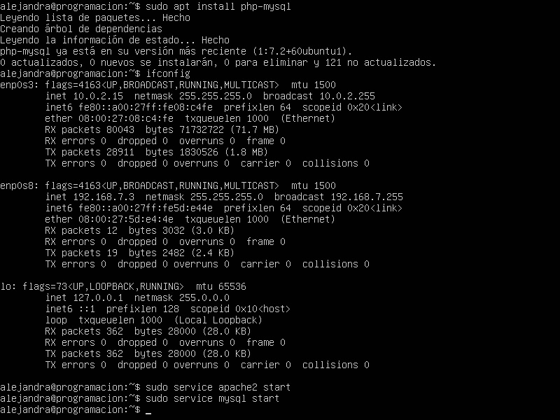

Primero debemos actualizar los paquetes de ubuntu para eso escribimos el comando"sudo update" y apareceran los paquetes por actualizar y los que ya estan actualizados, ahora escribimos sudo upgrade, damos enter y ponemos la s y enter para que se actualizen los paquetes
Despues de esperar a que se actualizen los paquetes los instalamos.
Para instalarlos ejecutamos el comando apt search httpd y nos apareceran los paquetes para instalar
Buscaremos el paquete de mysql y php ya que mas adelante lo utilizaremos para eso ejecutamos el comando apt search mysql, apt search php
y ejeutamos el comando sudo apt install mysql-server, sudo apt install php y escribimos s y enter para instalarlos.
Despues de instalarlos lo corremos para eso ejecutamos el comando sudo service mysql start y empezara a correr mysql, si queremos detenerlo escribimos sudo service mysql stop y se detendra.
para probarlo tenemos que ejecutar el comando ifconfig y nos apareceran las redes y nos saldra las ips
Ahora copiamos la ip que nos dio el ubuntu y lo escribimos en la url de nuestro navegador
Y nos saldra la pagina oficial de ubuntu.